Em 1989 Wolfgang Paul recebeu o prémio Nobel da
física pela sua invenção da armadilha
de iões que permite isolar um ião. Com essa invenção tornou-se
possível estudar um átomo isolado, e pôr a física quântica á prova, já
que nas experiências anteriores estavam sempre presentes muitos
átomos. O princípio de funcionamento da armadilha de iões é muito
simples. Usa-se um potencial de quadrupolo, nomeadamente, um sistema
em que em dois lados opostos de um quadrado há dois condutores com
potenciais positivos e nos outros dois lados há condutores com
potenciais negativos, criando-se assim um ponto de sela no centro do
quadrado.
Os iões têm carga positiva e são empurrados para o centro pelos
condutores com potencial positivo, e para fora do centro pelos
condutores com potencial negativo. O potencial dos condutores é
sucessivamente invertido, o que faz com que após algum tempo
unicamente o ião que se encontra no centro permaneça nesse ponto de
equilíbrio.
7.1. Potencial e campo elétrico
A diferença de potencial entre dois pontos separados por um pequeno
percurso
é:
(7.1)
esta definição implica que o potencial decresce mais rapidamente na
direção do campo elétrico e mantém-se constante na direção
perpendicular ao campo. Em cada ponto onde o campo não é nulo, existe
uma única direção em que o potencial permanece constante; o campo
elétrico é perpendicular a essa direção, e aponta no sentido em que
diminui (figura 7.1). As cargas positivas deslocam-se no
sentido em que o potencial decresce, e a as cargas negativas
deslocam-se no sentido em que o potencial aumenta.
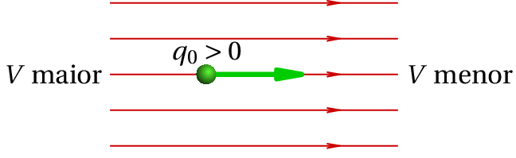
Figura 7.1: O campo elétrico aponta na direção e sentido em que o
potencial diminui mais rapidamente.
Se
for a componente do campo na direção do deslocamento vetorial
e
for o módulo desse deslocamento, a
equação 7.1 pode ser escrita
(7.2)
Como tal, a componente do campo elétrico na direção e sentido de um
vetor qualquer
é:
(7.3)
onde
é calculado na direção do vetor
. A derivada na expressão anterior é designada
derivada direccional da função
, na direção definida por
.
Em particular, se a direção escolhida for no sentido de um dos 3 eixos
cartesianos,
será a componente do campo na direção desse eixo, e
a derivada direccional será a derivada parcial em relação à variável
associada ao eixo:
(7.4)
Para calcular o potencial num ponto, costuma arbitrar-se que o
potencial seja nulo no infinito. Assim, o potencial num ponto P
obtém-se a partir do integral
(7.5)
As 3 componentes cartesianas do campo não podem ser 3 funções
arbitrárias da posição, já que, a partir das equações 7.4 conclui-se que
(7.6)
que são as condições necessárias e suficientes para garantir que o
campo é conservativo. A matriz jacobiana do campo, em função da
posição, é:
(7.7)
e devido às condições 7.6, essa matriz é simétrica, pelo que
só tem valores próprios reais. Como consequência, os pontos de
equilíbrio do campo elétrico podem ser pontos de sela ou nós, mas não
centros ou focos. No espaço de fase (
,
,
,
,
,
), como o sistema é conservativo, os pontos de equilíbrio podem
ser pontos de sela ou centros.
Exemplo 7.1
O campo elétrico numa região do espaço é dado pela expressão (unidades
SI)
(a) Demonstre que o campo
é conservativo. (b)
Calcule o potencial eletrostático (defina
na origem).
Resolução. (a) Para demonstrar que o campo é
conservativo, basta calcular as derivadas parciais cruzadas das três
componentes do campo e conferir que são iguais:
(b) O valor do potencial no ponto (
,
,
) é simétrico
do valor do integral de linha do campo, desde a origem (onde se
arbitra que
) até esse ponto. Como o campo é conservativo, o
integral pode ser calculado ao longo de qualquer percurso e o
resultado é sempre o mesmo. Escolhe-se um percurso formado pelos três
segmentos de reta que unem os pontos (0, 0, 0), (
, 0, 0), (
,
, 0) e (
,
,
):
7.2. Potencial devido a cargas pontuais
Em duas dimensões, o campo elétrico produzido por um sistema de
cargas pontuais
,
, …,
, é dado pela
equação 6.3. do capítulo anterior. O potencial é a função de
e
com derivadas parciais iguais às duas componentes do campo.
Como tal, o potencial é:
(7.8)
onde
e
são as coordenadas da posição da partícula
.
Esta expressão generalizada a 3 dimensões é:
(7.9)
em que as coordenadas (
,
,
) correspondem à posição
da partícula número
com carga
. O denominador na
equação 6.3 é a distância
da carga
ao ponto onde está a ser calculado o potencial.
Exemplo 7.2
Uma carga pontual de +1~nC encontra-se na origem, e uma segunda carga
de +4~nC encontra-se no ponto
~cm,
. Encontre a expressão
para o potencial no plano
e represente graficamente
essa função de duas variáveis.
Resolução. A constante de Coulomb pode ser escrita como:
Na equação 7.9 substitui-se
, as posições das cargas
em cm, os valores das cargas em nC e
, para obter a expressão do
potencial no plano
, em volts:
Para representar o gráfico dessa função, usam-se os seguintes comandos
no Maxima:
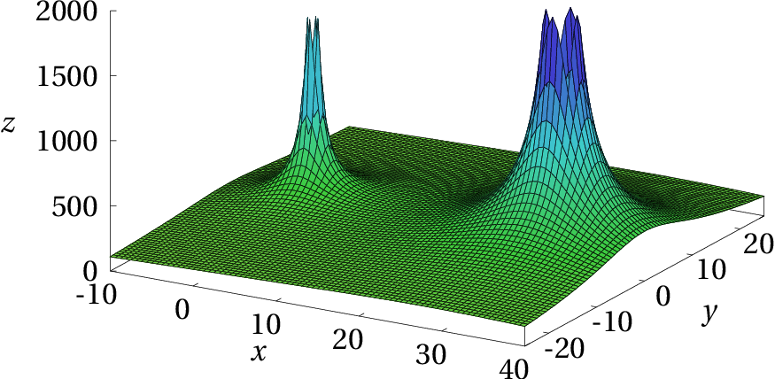
Figura 7.2: Potencial de duas cargas de +1 nC e +4 nC, no plano
.
A opção
foi usada para limitar o valor máximo de
a ser apresentado, já que nos pontos onde se encontram as cargas
pontuais positivas o potencial aumenta até infinito.
7.3. Superfícies equipotenciais
Outra forma conveniente de representar um potencial como o da
figura 7.2, é por meio das
equipotenciais, que são as curvas de nível, ou seja, as curvas
em que em todos os pontos o potencial tem o mesmo valor. No gráfico da
figura 7.2 as equipotenciais são a interseção da superfície
com diferentes planos paralelos ao plano
.
O programa ploteq do Maxima
permite obter as curvas equipotenciais correspondentes a um potencial
que depende de duas variáveis. Por exemplo, para obter as
equipotenciais do potencial já definido em %i1, basta usar o
seguinte comando:
A opção curves não é obrigatória e foi
usada simplesmente para que as curvas equipotenciais apareçam em azul,
e não na cor vermelha por omissão, que tem sido usada para as linhas
de campo. Algumas curvas equipotenciais foram traçadas clicando em
pontos do gráfico. A seguir entrou-se no menu de configuração,
apagou-se o conteúdo do campo curves e escreveu-se
red no campo fieldlines para que a seguir, cada vez
que se clicar num ponto do gráfico, seja traçada uma linha de campo
elétrico (a vermelho). O gráfico obtido mostra-se na
figura 7.3.
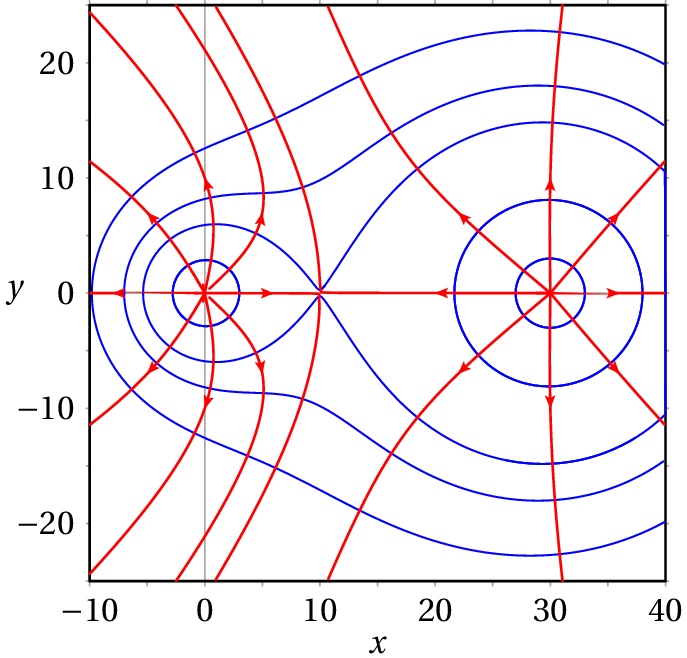
Figura 7.3: Superfícies equipotenciais e linhas de campo de duas cargas
pontuais de +1 nC e +4 nC.
As figuras 7.2 e 7.3 são duas representações
diferentes do mesmo potencial, no plano
, produzido por
duas cargas pontuais. O potencial dessas duas cargas realmente depende
de 3 variáveis,
,
e
e, por isso, as equipotenciais são
realmente superfícies no espaço a três dimensões e as curvas
apresentadas na figura 7.3 são a intersecção dessas
superfícies com o plano Oxy.
Em qualquer direção ao longo de uma superfície equipotencial, em três
dimensões, o produto escalar
é nulo,
já que
. Isso implica que o campo elétrico é
perpendicular às superfícies equipotenciais (figura 7.4).
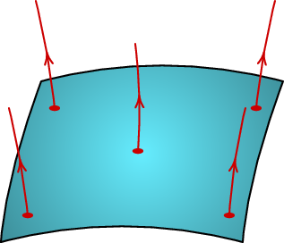
Figura 7.4: Superfície equipotencial, e linhas de campo, perpendiculares
à superfície.
7.4. Pontos críticos do potencial
As linhas de campo elétrico apontam na direção e sentido em que o
potencial diminui mais rapidamente. Como tal, num ponto onde o
potencial é um máximo local, existem linhas a apontar para fora desse
ponto (nó repulsivo); o fluxo numa superfície fechada à volta desse
ponto é positivo. Isto implica que na região onde o potencial é máximo
deve existir carga positiva.
Num ponto onde o potencial tem um mínimo local, as linhas de campo
apontam na direção desse ponto (nó atrativo) e o fluxo numa superfície
fechada à volta dele será negativo. Como tal, deve haver carga
negativa nesse ponto.
Os máximos e mínimos do potencial podem ser pontos onde o potencial se
aproxima de
ou
, no caso de cargas pontuais, ou
pontos de equilíbrio, onde as derivadas do potencial são todas nulas.
Existe um terceiro tipo de ponto crítico, ponto de
sela, em que o potencial é máximo segundo algumas
direções e mínimo segundo outras. Assim sendo, existem direções por
onde entram nesse ponto linhas de campo elétrico e outras direções por
onde há linhas de campo a sair desse ponto. O fluxo numa superfície
fechada à volta do ponto deve ser nulo e, assim, o campo é nulo nesse
ponto. Os pontos de sela são pontos de equilíbrio instável.
Como nos pontos onde o potencial é máximo ou mínimo há linhas de campo
a sair ou a entrar em todas as direções, esses pontos encontram-se no
interior de superfícies equipotenciais fechadas, umas dentro das
outras, aproximando-se do ponto mínimo ou máximo. Nos pontos de sela
uma superfície equipotencial cruza-se com si própria. No exemplo da
figura 7.3 há um ponto de sela, onde uma curva equipotencial
se cruza com si própria, e existem duas linhas de campo a terminar
nesse ponto e outras duas a partir dele. Nesse ponto de sela o campo
elétrico é nulo.
A figura 7.5 mostra outro exemplo de um potencial mais
complicado, em função de
e
, com vários pontos de sela, máximos
e mínimos locais. No ponto P há um máximo local, no ponto Q há um
mínimo local e o ponto S é ponto de sela.
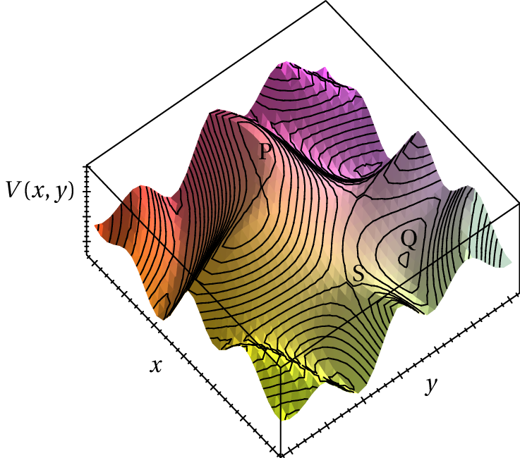
Figura 7.5: Potencial no plano (
,
) com vários pontos críticos.
7.5. Potencial e energia eletrostática
Se uma partícula com carga
se desloca entre dois pontos com uma
diferença de potencial
a variação da sua energia potencial
eletrostática é:
(7.10)
Como o campo elétrico é conservativo, a energia mecânica conserva-se e
a variação de energia potencial implica uma variação de energia
cinética.
Quando se trata de partículas elementares com cargas da ordem de
grandeza da carga elementar, é habitual utilizar uma unidade de
energia designada de eletrão-volt (eV),
que corresponde à energia adquirida por um eletrão que se desloca para
uma região onde o potencial aumenta de 1 V. Assim, passando para o
sistema internacional:
(7.11)
7.6. Potencial nos condutores
Dentro de um condutor isolado o campo elétrico é nulo. Se assim não
fosse, existiria movimento das cargas livres, criando-se um campo
interno que contrariava o campo externo; o movimento das cargas livres
só pára quando o campo total é nulo. Num metal, o tempo que demoram as
cargas livres a redistribuírem-se até o campo interno ficar nulo é
muito reduzido, da ordem dos
~s.
Como o campo elétrico é nulo dentro do condutor isolado, não existem
linhas de campo elétrico, e o potencial em todos os pontos dentro do
condutor é o mesmo. O fluxo em qualquer parte dentro do condutor
também é nulo e, assim, de acordo com a lei de Gauss, não pode existir
carga em nenhum ponto dentro do condutor. Toda a carga elétrica se
acumula na superfície do condutor.
A própria superfície do condutor é uma superfície equipotencial, já
que todos os pontos do condutor têm o mesmo potencial e as linhas de
campo elétrico fora do condutor são então perpendiculares à sua
superfície.
Um exemplo de condutor isolado é um automóvel. A carroçaria metálica é
um condutor e os pneus de borracha são isoladores. A superfície da
carroçaria é uma superfície equipotencial e a Terra, que também é
condutora, é outra superfície equipotencial. Se não existir nenhuma
carga elétrica no automóvel, o campo elétrico da atmosfera, que é
vertical e para baixo, induzirá cargas negativas na parte superior da
carroçaria, e cargas positivas na parte inferior. Algumas linhas de
campo terminarão na parte superior da carroçaria, perpendiculares a
ela, e outras linhas de campo começarão na parte inferior, também
perpendiculares a ela, tal como mostra a figura 7.6. No
chão, que tem menor potencial do que o automóvel, as linhas de campo
terminam todas na direção vertical.
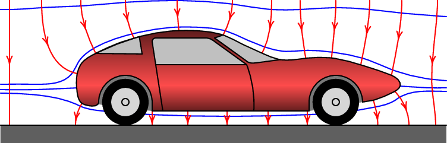
Figura 7.6: Linhas do campo elétrico da atmosfera e equipotenciais, num automóvel
com carga nula.
Se o automóvel estiver carregado, por exemplo, com carga positiva como
na figura 7.7, o potencial nele tem um valor máximo local. A
superfície da carroçaria é superfície equipotencial e há outras
superfícies equipotenciais à sua volta, com valor menor. Há linhas de
campo a começar em todos os pontos da superfície da carroçaria,
perpendiculares a ela.
Figura 7.7: Superfícies equipotenciais e linhas de campo de um automóvel
com carga positiva.
A distribuição de cargas na superfície de um condutor isolado não pode
ser uniforme. Por exemplo, no caso do automóvel da
figura 7.7, com carga positiva distribuída na sua
superfície, admitamos que a carga superficial
fosse igual em
toda a superfície. A lei de Gaus implica que o módulo do campo em cada
ponto da superfície é igual a
; como estamos a
admitir que a carga superficial
é constante, então o módulo do
campo,
, seria igual em todas as partes da superfície, em
particular nas regiões 1, 2 e 3 indicadas na figura 7.7.
A figura 7.8 mostra as linhas de campo nessas três regiões;
na região 1, onde o condutor é convexo, as linhas de campo afastam-se
entre si, ou seja, o campo elétrico diminui em função da distância
desde a superfície. Na região 2, onde o condutor é plano, as linhas de
campo são paralelas na vizinhança da superfície, o que implica que o
campo permanece constante para
próxima de zero, mas as linhas
acabam por se afastar entre si, fazendo com que
comece a diminuir
em função de
. Na região 3, onde o condutor é côncavo, as linhas de
campo inicialmente aproximam-se entre si, antes de começar a se
afastar; isso implica que
aumenta em função de
até um valor
máximo, e logo começa a diminuir. O gráfico no lado direito da
figura 7.8 mostra como seria
, em função de
, nessas
3 regiões.
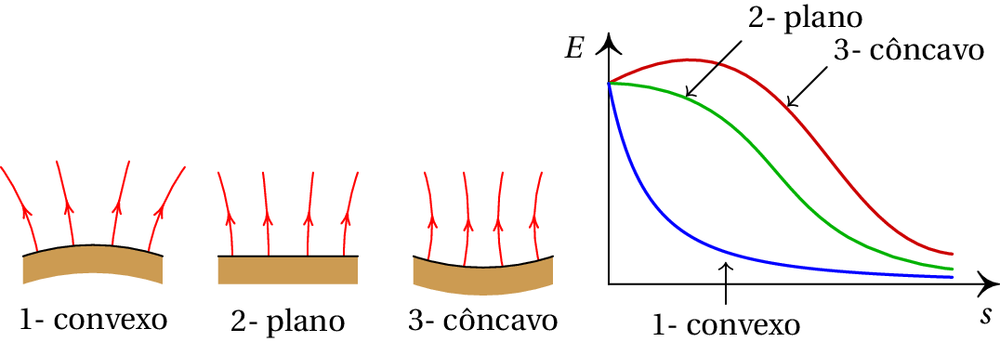
Figura 7.8: Módulo do campo elétrico em função da distância
a partir
da superfície do condutor, em 3 regiões de um condutor, admitindo
que a carga superficial é constante.
O potencial em cada uma das 3 regiões do condutor seria a área sobre
cada uma das três curvas no gráfico da figura 7.8 (integral do
campo elétrico desde a superfície,
, até infinito). Como tal, o potencial
na região 3, onde o condutor é côncavo, seria maior do que na região 2, onde
o condutor é plano, e ainda maior do que na região 1, onde o condutor é convexo.
Mas como o potencial nas três regiões tem de ser igual, conclui-se que
o campo na superfície e, portanto, a carga superficial, não pode ser
igual nas três regiões. A carga superficial tem de ser maior na região
convexa, menor na região plana, e ainda menor na região côncava. Desta
forma obtém-se o mesmo valor para o integral do campo elétrico nas 3
regiões, como se mostra na figura 7.9.
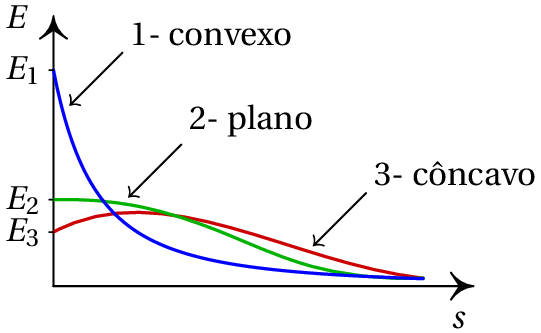
Figura 7.9: Gráfico do módulo do campo elétrico em 3 partes diferentes da
superfície de um automóvel com carga.
Nas regiões convexas, quanto menor for o raio da curvatura, maior será
a carga superficial, e nas regiões côncavas quanto maior for o raio de
curvatura, maior será a carga superficial. A carga acumula-se mais nas
pontas da superfície do condutor. Esse efeito é o princípio de
funcionamento do pára-raios; os raios são atraídos
para a ponta do pára-raios, onde há uma maior acumulação de cargas e,
portanto, campo elétrico mais forte.
7.6.1. Potencial de uma esfera condutora
Numa esfera condutora, as cargas distribuem-se uniformemente na
superfície. No capítulo sobre o campo elétrico viu-se que esse tipo de
distribuição de carga produz campo nulo no interior da esfera e no
exterior, campo é idêntico ao que existiria se toda a carga estivesse
concentrada no centro da esfera. Como tal, a expressão do potencial
fora da esfera é a mesma do que para uma carga pontual
:
(7.12)
em que
é a carga total da esfera, e
o seu raio.
O campo nulo no interior da esfera implica potencial constante. Como o
potencial é função contínua da posição, o potencial no interior da
esfera, será igual ao potencial na sua superfície, nomeadamente
(7.13)
Dentro da esfera (
) o campo é nulo e o potencial é constante.
Fora da esfera, o potencial decresce na proporção inversa da distância
ao centro (ver figura 7.10).
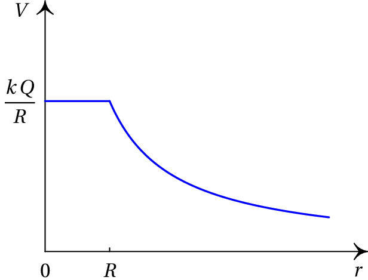
Figura 7.10: Potencial numa esfera condutora carregada.
Perguntas
(Para conferir a sua resposta, clique nela.)
O potencial produzido por um sistema de duas cargas pontuais,
e
, é nulo num ponto P (arbitrando potencial nulo a uma distância
infinita das cargas). Isso implica que:
A
força sobre uma carga de prova no ponto P é nula.
e
têm o mesmo sinal.
O
campo elétrico é nulo no ponto P.
O
trabalho total necessário para trazer as cargas
e
até às suas posições é nulo.
O
trabalho necessário para trazer uma carga desde o
infinito até o ponto P é nulo.
Uma carga de 4 µC encontra-se dentro de um campo elétrico com módulo
igual a 4×105 N/C. Qual é o trabalho necessário para
deslocar essa carga uma distância de 20 cm numa direção a 60° com o
campo elétrico?
0.28 J
160 mJ
0.68 J
28 J
16 J
O potencial elétrico de um sistema, em função da distância ao longo de
uma direção dada é representado pelo gráfico:
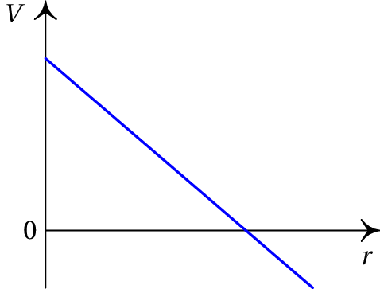
Qual das cinco funções no gráfico a seguir representa melhor a
componente do campo ao longo da mesma direção?
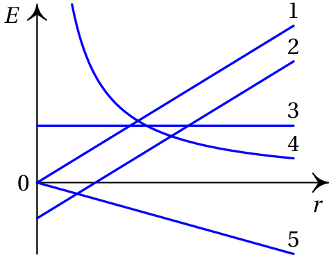
4
1
2
3
5
Quatro cargas pontuais, com valores
e
, encontram-se nos
vértices de um quadrado, como mostra a figura. O que é possível
afirmar acerca do potencial (
) e do módulo do campo (
) no centro
do quadrado (P)?
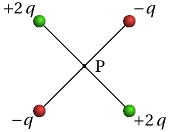
,
,
,
,
,
Perto de uma carga pontual existe um ponto onde o potencial elétrico
produzido pela carga é 3 V (arbitrando potencial nulo no infinito) e o
módulo do campo elétrico da carga é 200 N/C. Calcule a distância desde
a carga até ao ponto.
3 m
3 cm
1.5 cm
0.67 cm
6.7 cm
Problemas
O potencial no plano
é
Encontre a expressão do campo elétrico em função de
e
. Usando
Maxima, represente as superfícies equipotenciais e as linhas de
campo. Existe algum ponto onde o campo é nulo? A que tipo de sistema
corresponde esse potencial?
Existe um campo elétrico uniforme, com módulo de 15 kN/C, entre duas
placas paralelas separadas de 2.0 cm. Determine a diferença de
potencial entre as placas.
O potencial elétrico a uma certa distância de uma carga pontual é 600
V (arbitrando potencial nulo no infinito) e o valor do campo elétrico
é 200 N/C. Calcule a distância e o valor da carga.
Duas superfícies condutoras esféricas e concêntricas têm raios de 5 cm
e 7 cm. A superfície menor tem uma carga total de 3 nC e a carga total
na superfície maior é de
nC. Calcule a diferença de potencial
entre as duas superfícies.
A figura representa as linhas de campo elétrico devido a duas carga
pontuais separadas de 7 cm. A razão entre os valores das duas cargas é
4/9. (a) Calcule a distância do ponto P às
partículas. (b) Sabendo que a carga da partícula no lado
direito é de
nC, calcule o potencial no ponto P (admita
no
infinito).
As três figuras seguintes representam as superfícies equipotenciais de
três sistemas de duas cargas pontuais
e
. Em todos os casos
nC e a distância entre as duas cargas é 6 cm. Nas figuras
(a) e (b), a distância desde o ponto P até a carga
é igual a 2 cm. Determine o valor de
nos três casos.
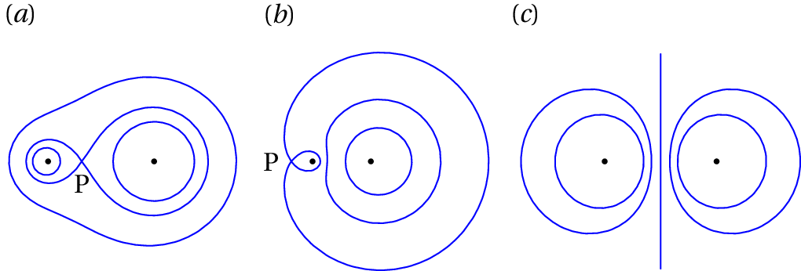
O potencial no plano
é (unidades SI):
Calcule o campo elétrico em qualquer ponto do plano
. Usando o Maxima, represente as superfícies
equipotenciais e as linhas de campo. Existe algum ponto de campo
elétrico nulo?
A figura mostra as superfícies equipotenciais devidas a uma carga
pontual e a um campo elétrico uniforme
. A grandes
distâncias da carga pontual, as superfícies são planos paralelos e a
distancia entre dois planos com diferença de potencial de 15 V é de
8 cm. (a) Calcule o módulo e a direção do campo externo
. (b) Diga se a carga pontual é positiva ou
negativa e justifique a sua resposta. (c) Qual a direção da
força sobre a carga pontual? (d) Se a distância entre a carga
pontual e o ponto P é 9 cm, determine o valor da carga pontual.
Respostas
Perguntas:1. E. 2. B. 3. D.
4. C. 5. C.
Problemas
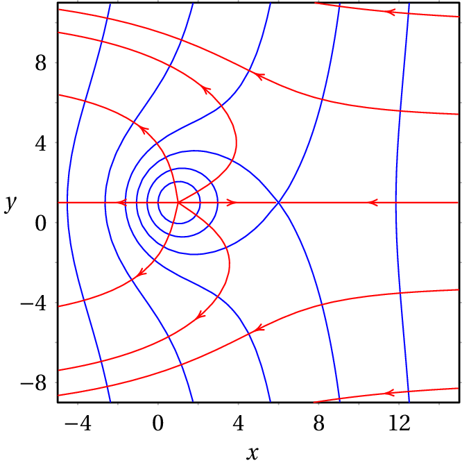
O campo é nulo no ponto (6, 1). Trata-se do potencial de uma carga
pontual positiva, no ponto (1, 1), dentro de um campo externo
uniforme
.
0.3 kV.
3 m, 200 nC
154.3 V
(a) 4.2 cm e 2.8 cm. (b)
V
(a) 12 nC (b)
nC (c)
nC
O campo é nulo no ponto (
,
) = (-4/3, 0)
(a) 187.5 V/m, para baixo (b) negativa (c) para cima
(d)
nC
Pergunta 1, resposta A: Errada
A força é igual ao produto da carga e o campo elétrico; para que a
força seja nula é necessário que o campo seja nulo, mas o facto do
potencial ser nulo em P não implica que o campo também seja nulo nesse
ponto.
(clique para continuar)
Pergunta 1, resposta B: Errada
Arbitrando potencial nulo no infinito, o potencial de cada carga tem o
mesmo sinal da carga; para que o potencial seja nulo num ponto, as
duas cargas deveriam ter sinais opostos.
(clique para continuar)
Pergunta 1, resposta C: Errada
Para que o campo elétrico seja nulo num ponto é necessário que todas
as derivadas parciais do potencial sejam nulas nesse ponto. Saber que
o potencial é nulo em P não fornece nenhuma informação sobre o valor
das derivadas parciais do potencial nesse ponto.
(clique para continuar)
Pergunta 1, resposta D: Errada
Esse trabalho é igual à energia potencial eletrostática do sistema das
duas cargas que é igual a k Q q/d e, portanto, diferente de zero (d é
a distância entre as cargas).
(clique para continuar)
Pergunta 1, resposta E: Certa
Esse trabalho é proporcional ao integral de linha do campo elétrico,
desde P até infinito, que é igual ao potencial no ponto P e, que é
então nulo.
(clique para continuar)
Pergunta 2, resposta A: Errada
O trabalho é diretamente proporcional à carga, à distância e à
componente tangencial do campo (tal vez usou a componente normal do
campo em vez da componente tangencial?).
(clique para continuar)
Pergunta 2, resposta B: Certa
O trabalho é diretamente proporcional à carga, à distância e à
componente tangencial do campo.
(clique para continuar)
Pergunta 2, resposta C: Errada
O trabalho é diretamente proporcional à carga, à distância e à
componente tangencial do campo.
(clique para continuar)
Pergunta 2, resposta D: Errada
O trabalho é diretamente proporcional à carga, à distância e à
componente tangencial do campo (tal vez usou a componente normal do
campo em vez da componente tangencial?).
(clique para continuar)
Pergunta 2, resposta E: Errada
Parece ter-se enganado nas unidades.
(clique para continuar)
Pergunta 3, resposta A: Errada
Como o potencial depende únicamente de
, o campo tem apenas
componente radial que é igual a menos a derivada de
e, como tal, o
módulo do campo é igual ao valor absoluto da derivada de
(declive
da reta).
(clique para continuar)
Pergunta 3, resposta B: Errada
Como o potencial depende únicamente de
, o campo tem apenas
componente radial que é igual a menos a derivada de
e, como tal, o
módulo do campo é igual ao valor absoluto da derivada de
(declive
da reta).
(clique para continuar)
Pergunta 3, resposta C: Errada
Como o potencial depende únicamente de
, o campo tem apenas
componente radial que é igual a menos a derivada de
e, como tal, o
módulo do campo é igual ao valor absoluto da derivada de
(declive
da reta).
(clique para continuar)
Pergunta 3, resposta D: Certa
Como o potencial depende únicamente de
, o campo tem apenas
componente radial que é igual a menos a derivada de
e, como tal, o
módulo do campo é igual ao valor absoluto da derivada de
(declive
da reta).
(clique para continuar)
Pergunta 3, resposta E: Errada
Como o potencial depende únicamente de
, o campo tem apenas
componente radial que é igual a menos a derivada de
e, como tal, o
módulo do campo é igual ao valor absoluto da derivada de
(declive
da reta).
(clique para continuar)
Pergunta 4, resposta A: Errada
O campo é nulo porque os campos das duas cargas positivas são iguais e
opostos e os campos das duas cargas negativas também são iguais e
opostos.
(clique para continuar)
Pergunta 4, resposta B: Errada
O potencial não é nulo, porque as duas cargas positivas produzem maior
potencial do que o potencial das duas cargas negativas.
(clique para continuar)
Pergunta 4, resposta C: Certa
(clique para continuar)
Pergunta 4, resposta D: Errada
O campo é nulo porque os campos das duas cargas positivas são iguais e
opostos e os campos das duas cargas negativas também são iguais e
opostos. O potencial não é negativo, porque as duas cargas positivas
produzem maior potencial do que o potencial das duas cargas negativas.
(clique para continuar)
Pergunta 4, resposta E: Errada
O campo é nulo porque os campos das duas cargas positivas são iguais e
opostos e os campos das duas cargas negativas também são iguais e
opostos.
(clique para continuar)
Pergunta 5, resposta A: Errada
Substitua os valores dados de
e
, nas expressões para o
potencial (
) e o campo elétrico (
) de uma carga
pontual e resolva o sistema.
(clique para continuar)
Pergunta 5, resposta B: Errada
Substitua os valores dados de
e
, nas expressões para o
potencial (
) e o campo elétrico (
) de uma carga
pontual e resolva o sistema.
(clique para continuar)
Pergunta 5, resposta C: Certa
Para uma carga pontual,
e
. Note-se que a
equação
não é válida aqui, porque o campo não é
constante!
(clique para continuar)
Pergunta 5, resposta D: Errada
Substitua os valores dados de
e
, nas expressões para o
potencial (
) e o campo elétrico (
) de uma carga
pontual e resolva o sistema.
(clique para continuar)
Pergunta 5, resposta E: Errada
Substitua os valores dados de
e
, nas expressões para o
potencial (
) e o campo elétrico (
) de uma carga
pontual e resolva o sistema.


A força é igual ao produto da carga e o campo elétrico; para que a força seja nula é necessário que o campo seja nulo, mas o facto do potencial ser nulo em P não implica que o campo também seja nulo nesse ponto.
(clique para continuar)